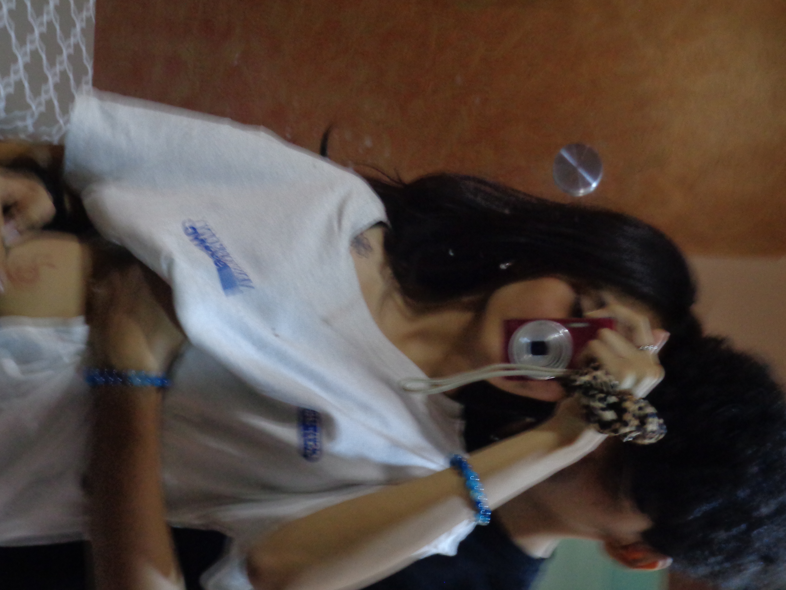
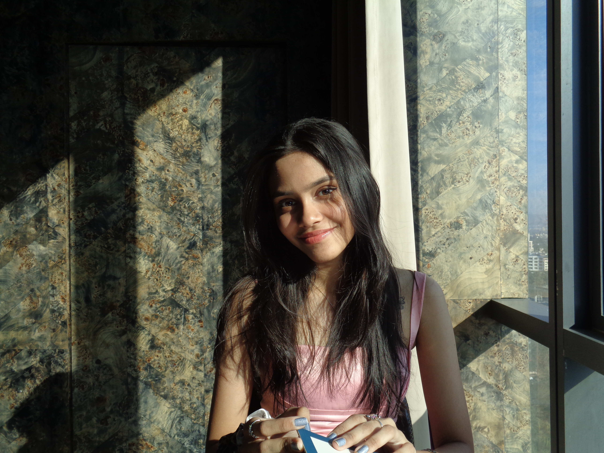
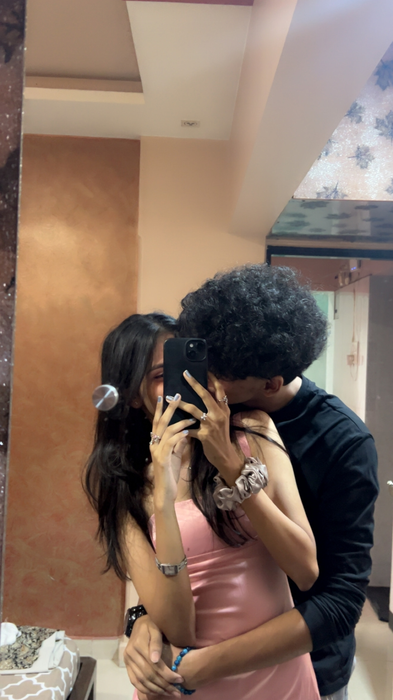

Sensual Mark
The marks you gave me felt so incredible, I couldn’t stop thinking about them. It was like a beautiful rush, so full of passion. I wish I could feel that every day, lost in the magic of your touch. 💋

Unforgettable First Glance
The moment I saw your body, I was completely captivated. My attraction to you grew so intense, it was like nothing I’d ever felt before. And everything that followed, your sweet moans, the way you made me feel... I crave those moments. The way you felt over me, so close, so perfect—it was pure bliss, and I can’t get enough of it🌙

Wild Moments
You were on top of me,rubbing our bodies going crazy,breathing and then when ur hands went down every second made me feel so crazy I can't even begin to explain how it felt when you started moving your hands, each motion making me feel something , something I couldn’t quite put into words. It felt so incredible, so beyond anything I could express. Then, a few days later, when you kissed me there, my heart stopped—I was breathless, caught in that moment It was like time froze, and all I could feel was you. I just wish you’d gone further, Cause i was really hard 🤗